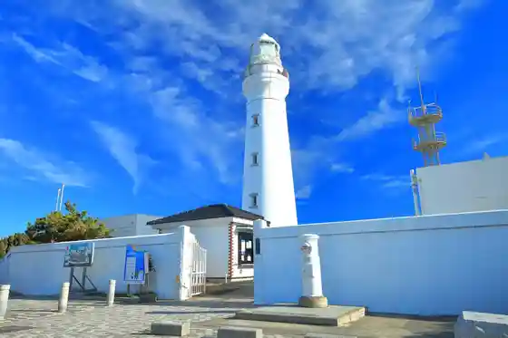
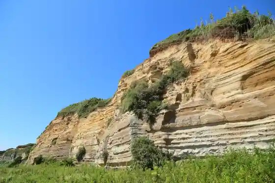
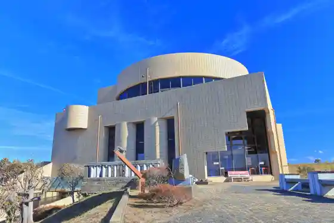
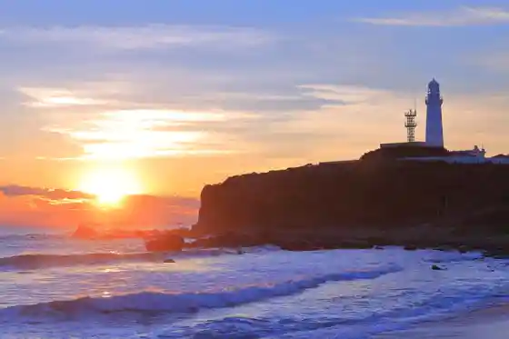

Inuboe Terasuterasu (Ichibu Tenpo Wo Nozoki Kyukanchu)
Choshi, Chiba · 0120-25-1240 · Official / source link
Inubozaki Lighthouse
Choshi, Chiba · 0479-25-8239 · Official / source link

Byobugaura / Choshi Mariina Beach
Choshi, Chiba · 0479-21-6667 · Official / source link

Chikyu no Maruku Mie Ru Oka Tembo Kan
Choshi, Chiba · 0479-25-0930 · Official / source link

Nippon'ichi Hayai Shonichi no Shutsu / Inubozaki
Choshi, Chiba · Official / source link

Dai 2 Kai Chibaken Taiko Festival / Iinuma Kannon Keidai
Choshi, Chiba · Official / source link
Choshi Kaiyoken Kyusho Sekaiichi Chitchana Aquarium
Choshi, Chiba · 0479-24-8870 · Official / source link
Choshi Serekuto Market
Choshi, Chiba · 0479-26-3123 · Official / source link
Choshi Pototawa
Choshi, Chiba · 0479-24-9500 · Official / source link
Uosse 21
Choshi, Chiba · 0479-25-4500 · Official / source link
Choshi Denkitetsudo
Choshi, Chiba · 0479-22-0316 · Official / source link
Togawa Town no Streetscape
Choshi, Chiba · 0479-24-8707 · Official / source link
Mangan Tera
Choshi, Chiba · 0479-24-8416 · Official / source link
Saruta Shrine
Choshi, Chiba · 0479-33-0362 · Official / source link
Irukauotchingu
Choshi, Chiba · Official / source link
Choshi Chijimi Dentokogei Kan
Choshi, Chiba · 0479-22-2103 · Official / source link
Iinuma Kannon (Enpuku Tera)
Choshi, Chiba · 0479-23-1316 · Official / source link
Myoken Miya Myofuku Tera
Choshi, Chiba · 0479-22-0650 · Official / source link
Choshi Jio Park Museum
Choshi, Chiba · 0479-21-6667 · Official / source link
Choshi Dentetsu Nure Sembei Eki (O Miyage Baiten)
Choshi, Chiba · 0479-26-3852 · Official / source link
Umi no Soba no Habu Sono (Habu Garden Pogatto)
Choshi, Chiba · 0479-25-3000 · Official / source link
Nagasaki Beach
Choshi, Chiba · 0479-24-8707 · Official / source link
Choshi Supotsutaun
Choshi, Chiba · 0479-30-1800 · Official / source link
Togawa Mini Local History Museum
Choshi, Chiba · 0479-22-0575 · Official / source link
JA Chibamidori Nosambutsu Chokubai Tokoro Midori no Daichi
Choshi, Chiba · 0479-26-3214 · Official / source link
CHOSHI KAYAKS / Choshi Kayakkusu
Choshi, Chiba · 080-7800-4823 · Official / source link
Kyu Kosei Hall
Choshi, Chiba · 0479-22-0340 · Official / source link
Ishigami Shuzo
Choshi, Chiba · 0479-22-0655 · Official / source link